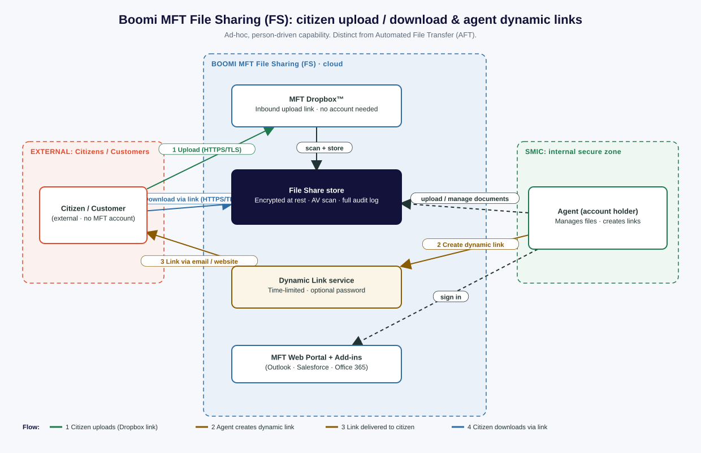

{kind=link}
{kind=link}
How to use this page
- The buttons at the very top download the same diagram in four formats. Use Visio (.vsdx) to drop straight into a Microsoft Visio solution-architecture pack, or draw.io if you want the fully editable source.
- The diagram below is the live SVG render. It shows the two people who touch File Sharing (an external citizen/customer and an internal agent inside SMIC) and the four numbered steps that connect them.
- The sections after the diagram explain what File Sharing actually is, how it differs from AFT, a naming trap to brief the team on, and the open design decisions that need a named owner before build.
- Everything here is generated from one source model (
gen_fileshare.py), so the SVG, draw.io and Visio files cannot drift apart.
The diagram

Boomi MFT File Sharing (FS): external citizen, internal SMIC agent, and the ad-hoc upload / download flow driven by dynamic links.
What File Sharing (FS) is
File Sharing is the ad-hoc, person-driven half of Boomi Managed File Transfer. It is the capability originally built by Thru (acquired by Boomi in 2025) for enterprise file sync and share, and it is designed for organisation-wide use across both internal and external collaboration. A person, not a scheduled system, decides to send or receive a file, and the platform handles security, storage and audit around that action.
Two building blocks do the work shown in the diagram:
- MFT Dropbox (inbound): lets people who do not hold an MFT account securely upload large files to an account holder. The intake form can be embedded in a web page, portal login page, or email signature, and the receiving agent gets a notification when a file lands. This is how a citizen uploads a document without needing credentials.
- Dynamic share links (outbound): an agent who holds an MFT account selects a file and generates a link to hand to an external party. Links can be time-limited and, in protected / message-password modes, require a password. Vanity URLs are supported. This is how a citizen downloads a document the agent has prepared for them.
Around both flows sit the platform controls: encryption in transit and at rest, antivirus scanning, a full audit trail, and retention policies for content lifecycle and data-protection obligations. Agents can also drive File Sharing from add-ins for Outlook, Salesforce, Office 365 and Windows Explorer rather than only the MFT web portal.
File Sharing (FS) vs Automated File Transfer (AFT)
Both are Boomi MFT, but they solve different problems. Getting a solution reviewer to see the split quickly usually settles most confusion.
| Dimension | File Sharing (FS) this diagram | Automated File Transfer (AFT) separate |
|---|---|---|
| Who initiates | A person, manually and ad hoc | A system, on a schedule or event trigger |
| Typical action | Citizen uploads a document; agent shares one back via a link | Files moved endpoint-to-endpoint by a configured flow |
| Interface | Web portal, Dropbox link, share links, Outlook / Salesforce / O365 add-ins | Configured flows, MFT node/agent, connectors and endpoints |
| External party | Needs no MFT account (Dropbox / link) | Machine endpoints (SFTP, FTPS, cloud storage, etc.) |
| Fit for | Person-to-person citizen document exchange | Repeatable, unattended, high-volume transfers |
Rule of thumb
If a human clicks a button to send or fetch a single document, it is File Sharing. If a job runs on its own to move files between systems, it is AFT.
Naming trap to brief the team on
“File Share” and “File Sharing” are not the same thing in Boomi MFT
File Sharing (FS) is the ad-hoc capability in this diagram. But AFT also has an endpoint type literally called “File Share”, which is something else entirely: a connector to a network share on a server, inside a LAN or between the LAN and the MFT cloud. It uses the operating system Net Use command to mount the shared resource and reads the path to decide whether it can connect. It has nothing to do with citizen-facing upload or download links.
Recommendation: standardise the wording in the solution architecture so reviewers never read “File Share” and picture citizen dropboxes. Suggest File Sharing (FS) module for this capability and AFT File Share endpoint for the network-share connector. Decision owner needed: solution/naming authority.
How the flow works (matches the numbers on the diagram)
- Citizen uploads. An external citizen opens the MFT Dropbox link (from a web page or email) and uploads a document over HTTPS/TLS. No MFT account is required. The file is antivirus scanned and stored encrypted, and the agent is notified.
- Agent creates a dynamic link. Inside SMIC, the agent (an MFT account holder) selects a document from the File Share store and generates a dynamic link. Where appropriate the link is time-limited and password protected.
- Link is delivered. The agent sends the link to the citizen by email or publishes it on a web page. The document itself is not emailed, only the controlled link to it.
- Citizen downloads. The citizen opens the link and downloads the document over HTTPS/TLS. The download is recorded in the audit trail alongside the original upload.
Every step is captured in the audit log, which is what makes File Sharing suitable where a compliance and evidence trail is required rather than ordinary email attachments or consumer file-share tools.
Editing the diagram / getting a clean Visio file
- Visio, guaranteed route: open
mft-file-share-flow.drawioin app.diagrams.net, then File → Export as → VSDX. This produces a perfectly Visio-native file with glued connectors. - Visio, direct:
mft-file-share-flow.vsdxopens straight in Microsoft Visio as editable shapes and connectors. It is a deliberately simple starting layout for you to restyle in your house template. - Embedding: use
mft-file-share-flow.svgfor crisp scaling in documents and slides, ormft-file-share-flow.pngwhere SVG is not accepted. - Regenerating: the four files come from the same node/edge model, so edit the model once and all formats regenerate together with no manual reconciliation.
Design considerations needing a named owner
Raising these now, before build, rather than deferring them. Each needs an owner and a recorded decision.
| # | Consideration | Why it matters | Owner |
|---|---|---|---|
| FS-1 | Public Dropbox vs Protected Dropbox for citizen uploads | An open, unauthenticated intake is convenient but widens the inbound attack surface. Protected / message-password mode raises the bar. Pick the posture deliberately for a public-facing service. | To assign |
| FS-2 | Dynamic link policy: expiry, password, single-use, revocation | A live download link is a bearer credential. Default TTL, whether a password is mandatory, and how a link is revoked all need to be set, not left to the individual agent. | To assign |
| FS-3 | Antivirus scan size limit on large citizen uploads | File Sharing is sold on large-file upload, yet the endpoint AV control (Windows MDE) has a scan-size ceiling flagged previously (gap G-15). Large citizen files could pass unscanned unless this is resolved. | To assign |
| FS-4 | Content inspection / DLP on citizen document exchange | The product does not provide native data-loss prevention. Decide whether sensitive-data inspection is required on the citizen channel and, if so, where it sits. | To assign |
| FS-5 | Retention and data-protection lifecycle | Retention policy governs how long citizen documents and their links persist. Set the retention window and deletion behaviour against the governing data-protection requirements. | To assign |
| FS-6 | Terminology standardisation (see naming trap) | Prevents reviewers conflating the FS module with the AFT File Share endpoint across the architecture set. | To assign |
Generated for the integration architecture programme. Diagram source of truth: gen_fileshare.py. Formats: .vsdx · .drawio · .svg · .png.